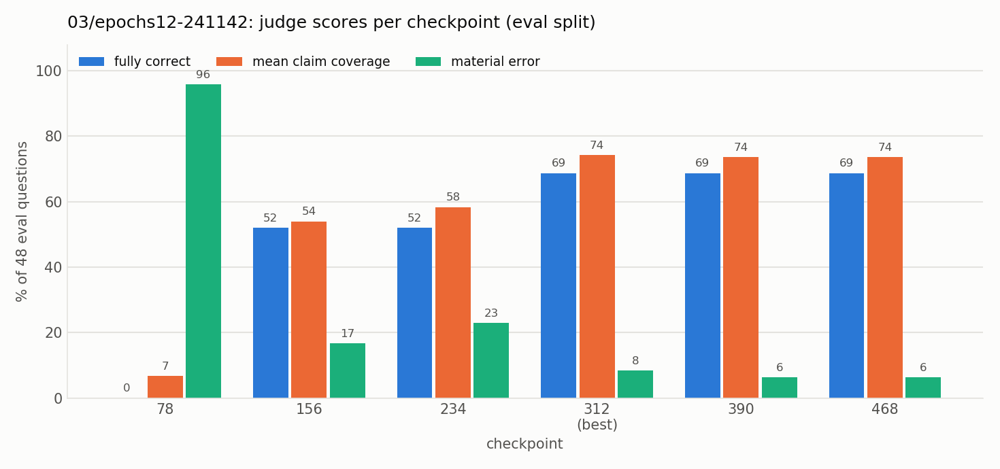

Experiment 03: Ablation: one answer per topic without the new questions
Tests with OPALX repo slice · field-solver / space-charge slice, 39 topics, judged by Claude Opus 5.5 against required and forbidden claims (README, source files)
1Summary
- Idea
- Repeat 02 without its 4 new questions per topic, to separate the effect of one answer per topic from that of more question wordings.
- Upshot
- 60% fully correct at 8 epochs, 69% with as many exposures as 02 (vs 81% for 02, 29% for 01): most of the gain comes from one answer per topic, question diversity adds the rest.
2Setup
- Model
unsloth/Qwen3-8B-unsloth-bnb-4bit(Qwen3-8B, 4-bit), LoRA r = 32, α = 32, dropout 0, on all seven projections (q, k, v, o, gate, up, down); AdamW 8-bit, lr 1e-4 linear, 6 warmup steps, batch 8, weight decay 0.001, max sequence length 2048, seed 3407, loss on the answer tokens only- Configurations
- Alpaca format.
config.yamlas 01/02: 8 epochs, 312 steps, each answer seen 64 times. Variantepochs12: 12 epochs, 468 steps, each answer seen 96 times as in 02. - Training data
- The 8 original
recallandmechanismquestions per topic ofdata/catalog.py, all paired with the topic'smechanismanswer. 312 rows, 39 distinct answers; every row is also a row of 02.
3Hypothesis
Compared with 01, 02 changed three things at once: one answer per topic instead of four, 4 more questions per topic, and therefore more exposures per answer (96 instead of 32). If 03 scores close to 02, the gain comes from consolidating each topic onto one answer; if it falls back towards 01, the new questions are what helps. The epochs12 variant also matches the number of exposures.
4Results
| checkpoint | fully correct | single-topic correct | mean claim coverage | composition coverage | material errors |
|---|---|---|---|---|---|
| 78 | 0/48 (0%) | 0/39 (0%) | 0.069 | 0.00 | 46/48 (96%) |
| 156 | 24/48 (50%) | 24/39 (62%) | 0.510 | 0.03 | 12/48 (25%) |
| 234 | 26/48 (54%) | 26/39 (67%) | 0.590 | 0.19 | 9/48 (19%) |
| 312 (best) | 29/48 (60%) | 29/39 (74%) | 0.646 | 0.19 | 8/48 (17%) |
| checkpoint | fully correct | single-topic correct | mean claim coverage | composition coverage | material errors |
|---|---|---|---|---|---|
| 78 | 0/48 (0%) | 0/39 (0%) | 0.068 | 0.00 | 46/48 (96%) |
| 156 | 25/48 (52%) | 25/39 (64%) | 0.540 | 0.10 | 8/48 (17%) |
| 234 | 25/48 (52%) | 25/39 (64%) | 0.583 | 0.23 | 11/48 (23%) |
| 312 (best) | 33/48 (69%) | 33/39 (85%) | 0.743 | 0.27 | 4/48 (8%) |
| 390 | 33/48 (69%) | 33/39 (85%) | 0.736 | 0.23 | 3/48 (6%) |
| 468 | 33/48 (69%) | 33/39 (85%) | 0.736 | 0.23 | 3/48 (6%) |
| experiment | rows | exposures per answer | fully correct | mean claim coverage |
|---|---|---|---|---|
| 01 | 390 | 32 | 29% | 0.451 |
| 03 | 312 | 64 | 60% | 0.646 |
| 03 epochs12 | 312 | 96 | 69% | 0.743 |
| 02 | 468 | 96 | 81% | 0.885 |

The scores stop improving at checkpoint 312 and stay at 69%; compositions are again 0 of 9.
5Conclusion
With the same number of exposures, 03 reaches 69% against 02's 81%. Most of the gain over 01 comes from consolidating each topic onto one answer; question diversity helps as well, by about 12 points.
Related: experiment 01 (baseline) · experiment 02 (full change)